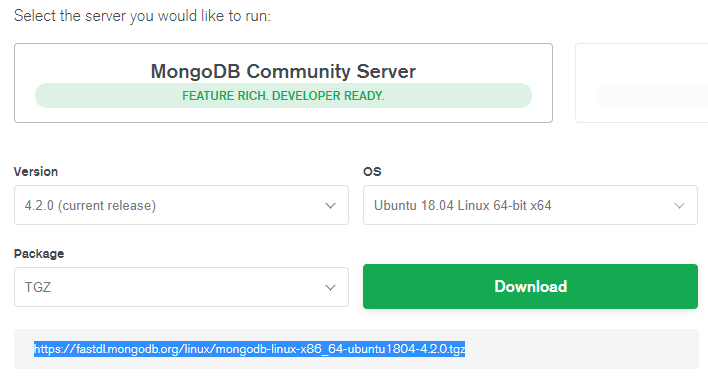

下载mongodb安装包
mongodb提供了linux各版本的安装包，前往https://www.mongodb.com/download-center/community，并根据自己需要选择配置：

选择完成之后下方会生成一个链接，从此链接下载mongodb安装包：1
wget https://fastdl.mongodb.org/linux/mongodb-linux-x86_64-ubuntu1804-4.2.0.tgz
安装mongodb
解压下载的安装包并将其移动到你想安装的位置：1
2 tar -zxvf mongodb-linux-x86_64-ubuntu1804-4.2.0.tgz mongodb
sudo mv mongodb-linux-x86_64-ubuntu1804-4.2.0/ /usr/local/mongodb
此时已经可以运行mongodb了。但是为了更方便的使用mongodb，可以将mongodb的而执行文件路径加入PATH:1
export PATH=/usr/local/mongodb/bin:$PATH
上述命令只能在本次会话中导入PATH，当重启另一个会话或者重启服务器之后，导入的PATH会失效。
修改~/.bashrc（没有时创建），在文件底部加入1
export PATH=/usr/local/mongodb/bin:$PATH
并运行以下指令，可以查看到已经导入的PATH。1
2 source ~/.bashrc //载入PATH
echo $PATH //查看PATH
为mongodb添加配置文件
以上安装方法安装的mongodb并没有配置文件，你可以在运行mongodb时指定配置选项，但是为了更方便的管理mongodb，可以创建一个mongodb的配置文件，并从配置文件启动mongodb。
mongodb的配置文件使用yml格式编写。具体的配置选项请参考官方文档，这里只做最基本的配置：1
2
3
4
5
6
7
8
9
10
11
12
13
14
15
16
17systemLog:
destination: file ##日志保存方式
path: "/var/log/mongodb/mongod.log" ##日志路径
logAppend: true ##mongodb重启时将日志追加到原来日志文件内容末尾，false时创建新的日志文件
storage:
dbPath: /data/mongodb ##数据保存路径
indexBuildRetry: true ##重启mongodb时重新创建不完整的索引
journal:
enabled: true ##启用持久日志来保证数据完整性
processManagement:
fork: true ##开启守护进程
pidFilePath: /usr/local/mongodb/.pid ##pid保存路径
net:
bindIp: 127.0.0.1 ##设置mongodb服务器监听ip地址，默认是127.0.0.1；如果监听多个ip地址，使用逗号隔开
port: 27017 ##设置mongodb的监听TCP端口
setParameter:
enableLocalhostAuthBypass: false ##关闭本地连接密码认证
创建并保存配置文件之后，运行mongodb时指定配置文件路径即可使用该配置。
运行并连接mongodb
运行命令，如果出现以下提示，则标识mongodb启动成功。1
2
3
4 mongod --config path/to/config
about to fork child process, waiting until server is ready for connections.
forked process: 5807
child process started successfully, parent exiting
运行：1
mongod --shutdown --config path/to/config
关闭mongodb，注意一定要指定你启动mongodb时指定的配置文件路径。
mongodb自带了一个管理shell，运行命令：1
mongo
进入shell管理界面。